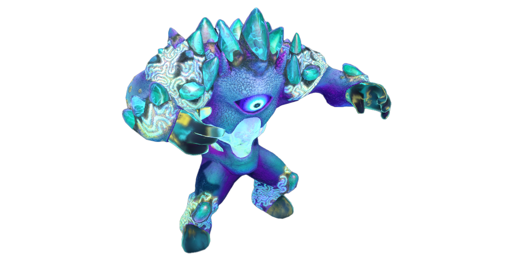
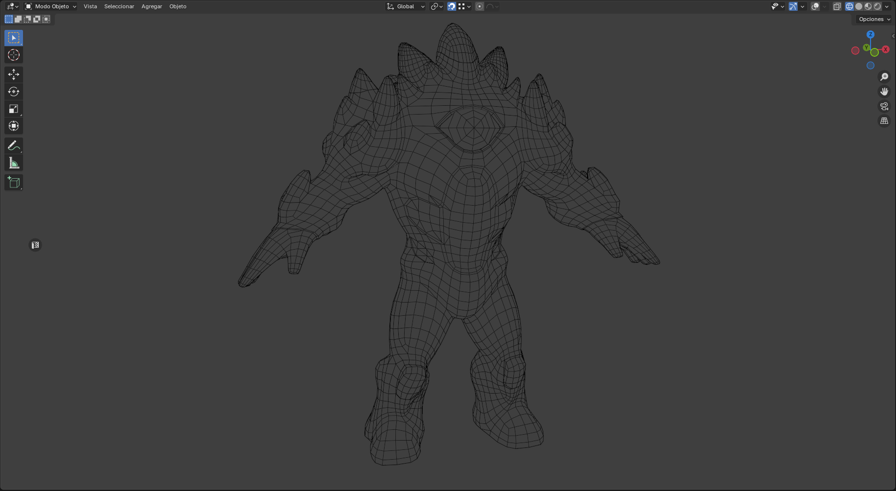
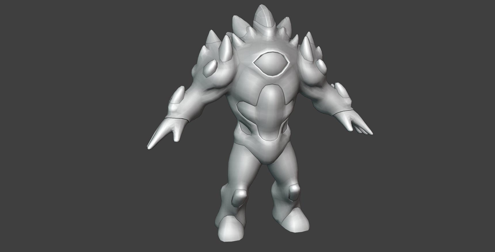
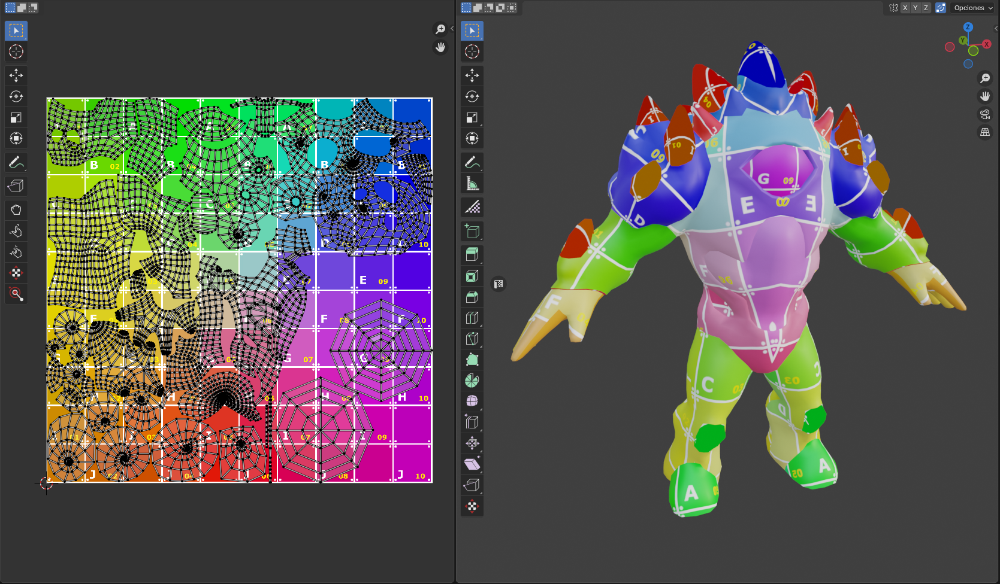
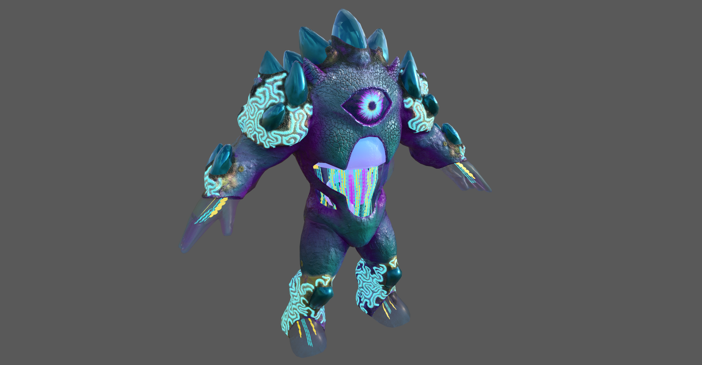
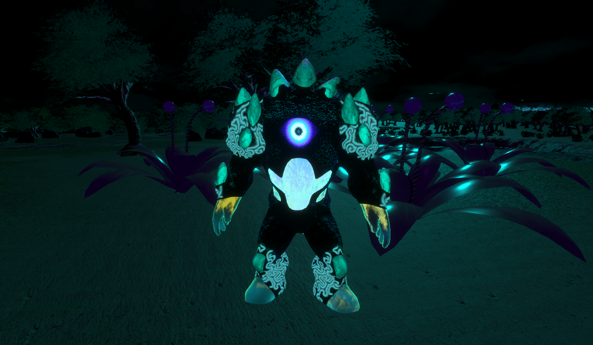
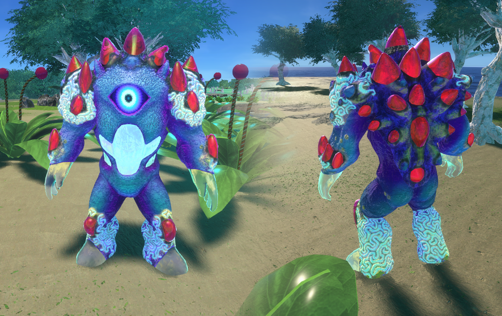

Water Creature
Low Poly creature created for my RTS project. Fully textured, rigged and animated. Integrated into Unity and playable.
Creature triangle count: 13.652
Blender
Substance Painter
Unity